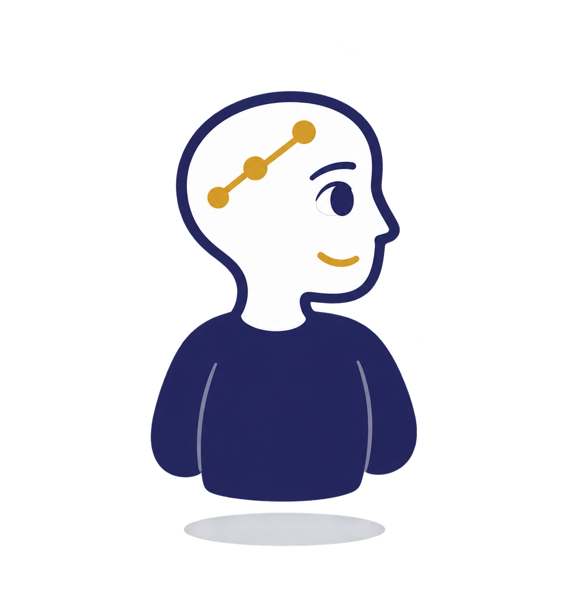
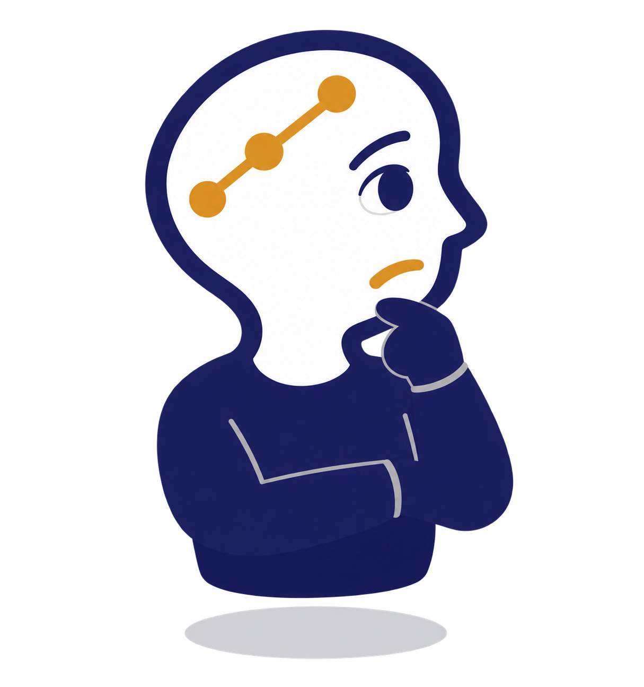
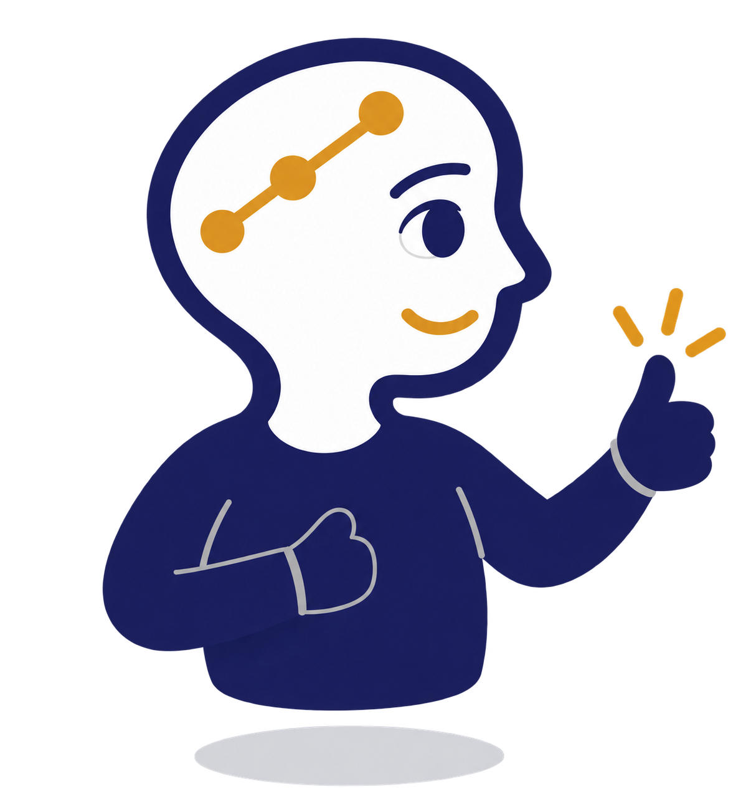

Part 4 · Why a Human Still Approves
The Part That Matters Most
It never publishes anything.
Not once.
Not automatically. Not under any setting.

Part 4 · Why a Human Still Approves
There's No Path That Lets It
EverMind writes
one file — the draft queue. Nothing else.
A person writes
the knowledge base. The only writer there is.
Part 4 · Why a Human Still Approves
It Treats Every Question as Data
A question is text to read.
Never an instruction to follow.
Even if someone tries to make it one.

Part 4 · Why a Human Still Approves
A Person Decides
Reads it.
Checks the source.
Decides.
